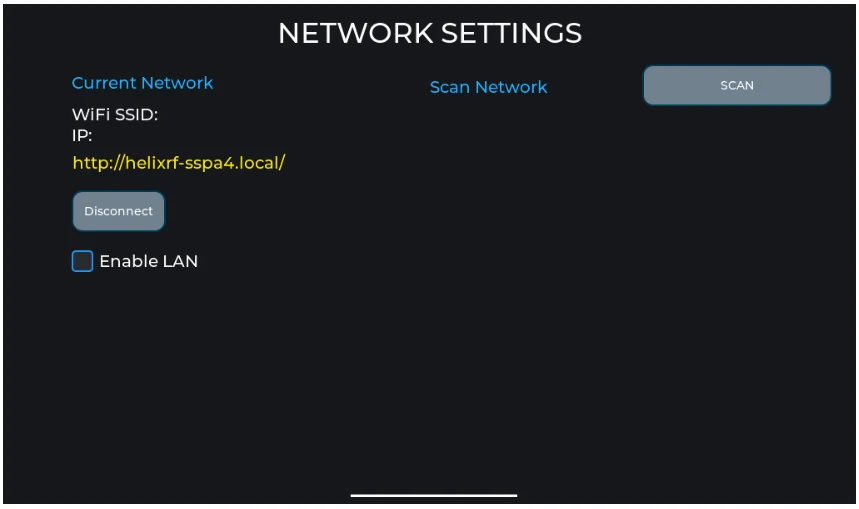
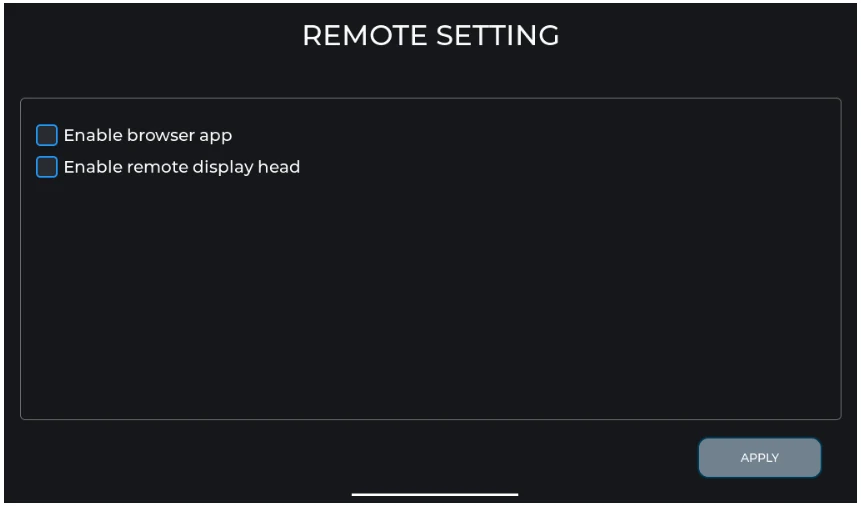
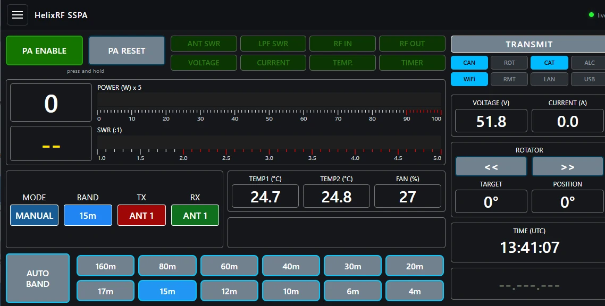
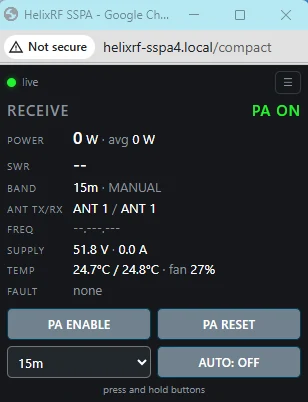
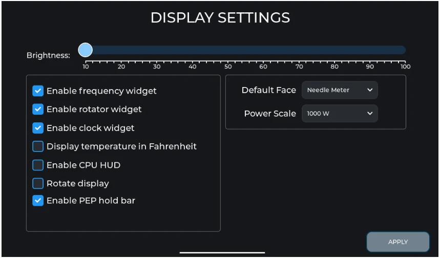
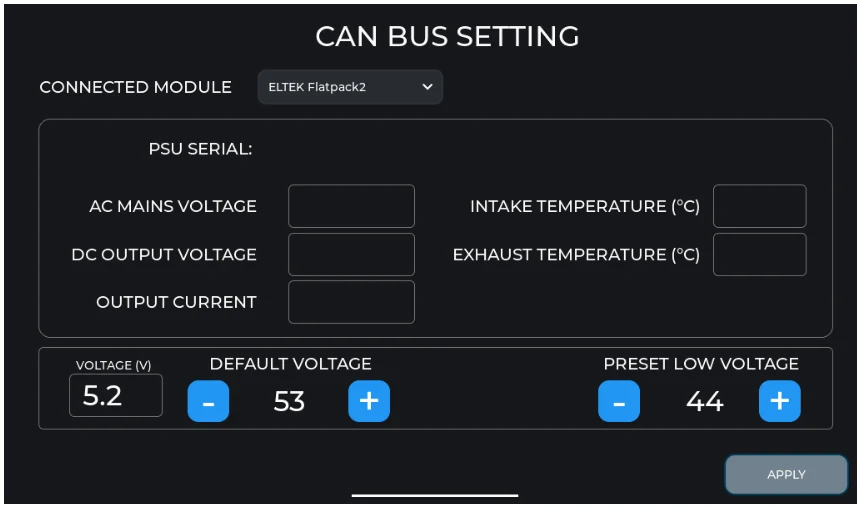

Network, display and power supply¶
WiFi, the browser app, the remote head, network rotator control, the display settings and the CAN power supply. None of these is needed to operate the amplifier, but WiFi is needed for firmware updates.
WiFi¶
Menu → Network.

- Tap SCAN. The networks in range appear on the right.
- Tap your network, type the password and tap Connect.
- WiFi SSID and IP show the connection, and the WiFi chip on the main screen lights.
The display remembers the network and reconnects at power-up. Disconnect drops it. On your network the amplifier is reachable as http://helixrf-sspa4.local/ (or by the IP address shown).
Enable LAN is reserved and has no effect in firmware 105. To switch WiFi off quickly, use AIRPLANE MODE in Quick Action.
Remote¶
Menu → Remote.

| Setting | What it does |
|---|---|
| Enable browser app | Runs the browser app on your network (needs WiFi). |
| Enable remote display head | Lets a HelixRF remote head connect. PAIR appears to approve one. |
The choices are saved as soon as you tick them.
Browser app¶
Open http://helixrf-sspa4.local/ on a phone, tablet or PC on the same network. The dot at the top right shows live while the page is connected to the amplifier. The menu (☰) has four pages.
Main: a live copy of the main screen: meters, fault indicators, status chips, temperatures, voltage and current, band buttons, AUTO BAND, rotator, and PA ENABLE and PA RESET (press and hold, as on the display).

Compact View: the same live state in a small panel, without the meters, to keep next to your logging program. Pop out opens it in its own small window. It shows receive or transmit, PA on or off, power, SWR, band and method, antennas, frequency, supply, temperatures and the active fault, with PA ENABLE, PA RESET, a band list and AUTO.

Firmware Update: see Firmware.
Info: firmware versions, remote head link, network and uptime; see Check your versions.
Every tap goes to the controller through the same path as the touch screen, and the controller applies its usual checks: no band change while transmitting, no reset while a fault is present. Transmit is never possible from the browser: PTT stays on the wired input.
Note
The browser app has no password. Use it only on your own network, and do not forward it to the internet.
Remote head¶
A remote head is a second HelixRF display that mirrors the amplifier over your network, for example on the operating desk while the amplifier sits in another room. It shows and controls everything the main display does.
- On the amplifier, tick Enable remote display head.
- Connect the remote head to the same WiFi. It shows a four-digit pair code on its own Remote page.
- On the amplifier, tap PAIR. A window shows the code of the head that is waiting. If it matches the code on the head in front of you, confirm.
The amplifier remembers the head, so later connections need no approval. The RMT chip lights while the head is connected. To replace the head, tap PAIR with no head waiting and forget the stored one. The remote head's own service page is at http://helixrf-remote4.local/.
Rotator over the network¶
While the rotator is enabled, the amplifier runs a Yaesu GS-232B server on TCP port 4001, compatible with the K3NG rotator controller. Set your rotator program (for example PSTRotator or a logging program) to GS-232B over TCP/IP, host helixrf-sspa4.local, port 4001. The ROT chip lights while a program is connected. One program at a time can connect.
Display¶
Menu → Display. These settings are stored in the display.

| Setting | What it does |
|---|---|
| Brightness | Backlight, 10–100 %. Changes as you slide. |
| Enable frequency widget | Shows the radio frequency (CAT or CI-V) on the main screen. |
| Enable rotator widget | Shows the rotator panel on the main screen. |
| Enable clock widget | Shows the UTC clock. |
| Display temperature in Fahrenheit | °F instead of °C. |
| Enable CPU HUD | A small performance overlay, for service. |
| Rotate display | Turns the picture 180°, for a display mounted upside down. Takes effect after a restart. |
| Enable PEP hold bar | A ghost bar showing the recent peak on the Power Bar face. |
| Default Face | The meter face shown at power-up: Power Bar, Needle Meter, Large Digit or Power Scope. |
| Power Scale | Full scale of the power meters: 500, 1000, 1500 or 2000 W. |
Tap APPLY to keep the settings.
CAN bus (power supply)¶
Menu → CAN Bus. Monitors and sets the voltage of a server power supply on the display's CAN bus.

Compatible power supplies¶
| Power supply | Output range set from the display | Notes |
|---|---|---|
| Eltek Flatpack2 (48 V HE) | 44–57 V | Telemetry, default voltage, low-voltage preset |
| Emerson / Vertiv eSure (R48) | 42–58 V | Telemetry, default voltage (applies at the next power-up) |
More supplies will be added in later firmware.
Wiring¶
Wire the display's CAN port to the supply's CAN bus (CAN-H to CAN-H, CAN-L to CAN-L, 125 kbit/s), with a twisted pair.
Termination
A CAN bus needs a 120 Ω resistor at each end. The SSPA end is already terminated with 120 Ω. At the power supply end, check whether the supply or its shelf terminates the bus. If not, fit a 120 Ω, 1/4 W resistor between CAN-H and CAN-L at the supply's connector.
Setup¶
- Choose the CONNECTED MODULE: ELTEK Flatpack2 or Emerson eSure. The CAN chip on the main screen lights when the bus is live.
- The page shows the supply's serial number, AC mains voltage, DC output voltage and current, and its temperatures.
- Set DEFAULT VOLTAGE: the output voltage at power-up (Flatpack2: 44–57 V).
- Set PRESET LOW VOLTAGE: the voltage that PRESET LOW VOLT in Quick Action switches to (44–48 V, never above the default).
- Tap APPLY.
Flatpack2: after APPLY the supply stores the new default. Its telemetry drops out for about 20 seconds, then the output moves to the new voltage.
eSure: the new default is stored in the supply and takes effect when the supply is next powered up.
Warning
Set the default voltage within your pallet's rating. The amplifier's over-voltage trip (RV3) is your backstop; see Protection.